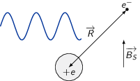
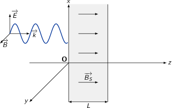
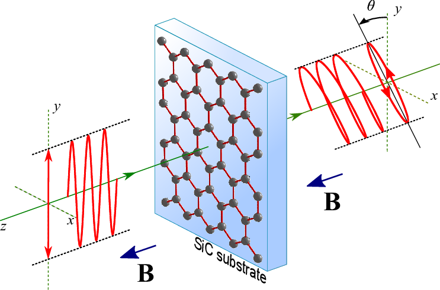
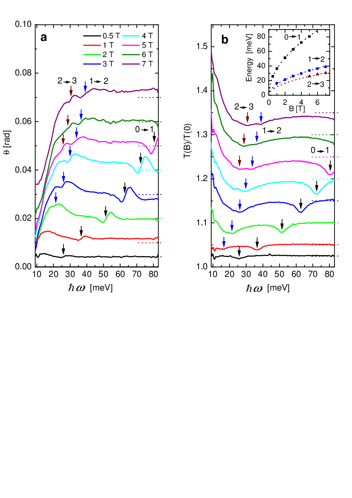

TD7 : Propagation dans le vide et les milieux diélectriques
1 Réflexion d'onde en incidence oblique sur un conducteur parfait
On considère une surface plane séparant le vide d'un conducteur métallique parfait. Une onde plane électromagnétique incidente se propage dans le vide. Son champ électrique en \(M(x,y,z)\) à l'instant \(t\) est :
\begin{align*} \vv{E_i}=\vv{E_0}\cos(\vv{k_i}.\vv{r}-\omega t) \end{align*}Cette onde rencontre le métal sous l'angle d'incidence θ et se réfléchit. Le plan \(Oxz\) est choisi de façon à contenir le vecteur d'onde incident \(\vv{k_i}\). On prend l'origine \(O\) sur la surface du métal. L'onde incidente est polarisée rectilignement et perpendiculairement au plan d'incidence \((\vv{E_i}\perp Oxz)\).
- Déterminer les champs \((\vv{E_i},\vv{B_i})\) de l'onde incidente et \((\vv{E_r}, \vv{B_r})\) de l'onde réfléchie.
L'onde plane incidente est polarisée rectilignement selon \(\vv{u}_y\) soit le champ électrique
\begin{align*} \vv{E_i}&=E_0\cos(\vv{k_i}.\vv{r}-\omega t)\vv{u}_y \end{align*}Le fait que l'onde incidente soit plane, le champ magnétique se déduit de l'expression suivante
\begin{align*} \vv{B_i}&=\frac{\vv{k_i}\times\vv{E_i}}{\omega}\\ &=\frac{1}{\omega}\left| \begin{array}{l} k_{ix}\\0\\k_{iz} \end{array} \right.\times\left| \begin{array}{l} 0\\E_{i}\\0 \end{array} \right.=\frac{1}{\omega}\left| \begin{array}{l} -k_{iz}E_i\\0\\k_{ix}E_i \end{array} \right. \end{align*}avec \(k_{ix}=k_i\sin\theta\) et \(k_{iz}=k_i\cos\theta\). La propagation se faisant dans le vide, la norme du vecteur d'onde est en outre égale à \(\frac{\omega}{c}\). L'expression de \(\vv{B_i}\) devient
\begin{align*} \vv{B_i}&=\frac{E_0}{c}\cos(\vv{k_i}.\vv{r}-\omega t)\left(-\cos\theta\,\vv{u_x}+\sin\theta\,\vv{u_z}\right) \end{align*}Afin de déterminer l'expression du champ électrique de l'onde réfléchie, on applique les relations de passage à l'interface vide/métal au point \(O\) i.e. en \(\vv{r}=\vv{0}\). Le métal étant un conducteur parfait, la conservation de la composante tangentielle du champ électrique implique que le champ électrique de l'onde réfléchie demeure polarisé selon \(\vv{u_y}\). On obtient donc la relation suivante
\begin{align*} \left.\left(\vv{E_i}+\vv{E_r}-\cancel{\vv{E}_\text{métal}}\right)\right|_{\vv{r}=\vv{0}}\times\vv{u_z}&=\vv{0}\\ \vv{E_r}(\vv{r}=\vv{0},t)&=-\vv{E_i}(\vv{r}=\vv{0},t)\\ \vv{E_{0r}}&=-\vv{E_{0i}} \end{align*}Le champ électrique réfléchi s'écrit en tout point de l'espace et du temps
\begin{align*} \vv{E_r}&=-E_{0i}\cos(\vv{k_r}.\vv{r}-\omega t)\vv{u_y} \end{align*}De la même façon que pour l'onde incidente, le champ magnétique associé à l'onde réfléchie s'exprime
\begin{align*} \vv{B_r}&=\frac{\vv{k_r}\times\vv{E_r}}{\omega} \end{align*}avec \(\vv{k_r}=k\left(\sin\theta\vv{u_x}-\cos\theta\vv{u_z}\right)\) et \(k=\frac{\omega}{c}\) (la longueur d'onde n'est pas modifiée lors de la réflexion – cf. exercice "Réflexion totale et onde évanescente" – la norme du vecteur d'onde \(\vv{k_r}\) est égale à la norme du vecteur d'onde \(\vv{k_i}\)). Le champ magnétique s'écrit donc
\begin{align*} \vv{B_r}&=\frac{E_0}{c}\cos(\vv{k_r}.\vv{r}-\omega t)\left(-\cos\theta\,\vv{u_x}-\sin\theta\,\vv{u_z}\right) \end{align*}
- Déterminer les champs \((\vv{E},\vv{B})\) de l'onde résultante dans le vide.
Le champ électrique résultant s'exprime comme la superposition des champs électriques incident et réfléchi soit
\begin{align*} \vv{E}&=\vv{E_i}+\vv{E_r}\\ &=\vv{E_0}\left(\cos(\vv{k_i}.\vv{r}-\omega t)-\cos(\vv{k_r}.\vv{r}-\omega t)\right)\\ &=\vv{E_0}\,\text{Re}\left(e^{i(\vv{k_i}.\vv{r}-\omega t)}-e^{i(\vv{k_r}.\vv{r}-\omega t)}\right)\\ &=\vv{E_0}\,\text{Re}\left(e^{-i\omega t}\left(e^{i(kx\sin\theta+kz\cos\theta)}-e^{i(kx\sin\theta-kz\cos\theta)}\right)\right)\\ &=\vv{E_0}\,\text{Re}\left(e^{-i(\omega t-kx\sin\theta)}\left(e^{ikz\cos\theta}-e^{-ikz\cos\theta}\right)\right)\\ &=\vv{E_0}\,\text{Re}\left(e^{-i(\omega t-kx\sin\theta)}\times2i\sin(kz\cos\theta)\right)\\ &=2\vv{E_0}\left(\sin(\omega t-kx\sin\theta)\sin(kz\cos\theta)\right)\\ &=-2E_0\sin(kx\sin\theta-\omega t)\sin(kz\cos\theta)\,\vv{u_y} \end{align*}Le champ magnétique résultant s'écrit
\begin{align*} \vv{B}&=\vv{B_i}+\vv{B_r}\\ &=\frac{E_0}{c}\Big [-\cos\theta\,\vv{u_x}\left(\cos(\vv{k_i}.\vv{r}-\omega t)+\cos(\vv{k_r}.\vv{r}-\omega t)\right)\\ \MoveEqLeft[-3]+\sin\theta\,\vv{u_z}\left(\cos(\vv{k_i}.\vv{r}-\omega t)-\cos(\vv{k_r}.\vv{r}-\omega t)\right)\Big ]\\ &=-2\frac{E_0}{c}\Big[\cos\theta\cos(kx\sin\theta-\omega t)\cos(kz\cos\theta)\,\vv{u_x}\\ \MoveEqLeft[-4]+\sin\theta\sin(kx\sin\theta-\omega t)\sin(kz\cos\theta)\,\vv{u_z}\Big ] \end{align*}
- Quelle est la vitesse de phase \(v_\phi\) de l'onde résultante ?
La phase φ de l'onde résultante est égale à \(kx\sin\theta-\omega t\). La vitesse de phase est le rapport entre la pulsation ω et la norme du vecteur d'onde i.e. \(k\sin\theta\) dans le cas présent. Sachant que \(\frac{\omega}{k}\) est égal à \(c\) (propagation dans le vide), la vitesse de phase devient
\begin{align*} v_\phi&=\frac{\omega}{k\sin\theta}=\frac{c}{\sin\theta} \end{align*}
- Que deviennent \(\vv{E}\) et \(\vv{B}\) au voisinage immédiat de la surface du métal ?
- Au voisinage de la surface du métal \(z\to0\) et donc \(\vv{E}\to\vv{0}\) tandis que \(\vv{B}\to-2\frac{E_0}{c}\cos\theta\cos(kx\sin\theta-\omega t)\,\vv{u_x}\)
- Déterminer les densités surfaciques de charge σ et de courant \(\vv{j_S}\) sur la surface métallique.
Afin de déterminer la densité surfacique de charge σ, on utilise le fait que la composante normale du champ électrique est discontinue soit
\begin{align*} \vv{u_z}.\left.\left(\vv{E}-\vv{E}_\text{métal}\right)\right|_\text{surface}&=\frac{\sigma}{\epsilon_0} \end{align*}or \(\vv{E}\to\vv{0}\) à la surface du métal et \(\vv{E}_\text{métal}=\vv{0}\), la densité surfacique de charge σ est nulle.
La densité surfacique de courant \(\vv{j_S}\) se déduit de la relation de discontinuïté de la composante tangentielle du champ magnétique soit
\begin{align*} \vv{u_z}\times\left.\left(\cancel{\vv{B}_\text{métal}-\vv{B}}\right)\right|_\text{surface}&=\mu_0\vv{j_S}\\ \vv{j_S}&=\frac{2E_0\cos\theta}{\mu_0 c}\cos(kx\sin\theta-\omega t)\,\vv{u_y} \end{align*}
- Quelle est la pression de radiation moyenne de l'onde sur le métal ? L'exprimer en fonction de l'intensité incidente.
La pression de radiation \(P\) s'exprime en fonction de l'angle d'incidence θ et de l'intensité \(I\) par la relation (cf. devoir "Interprétation corpusculaire de la pression de radiation")
\begin{align*} P&=2\frac{I}{c}\cos^2\theta \end{align*}Par ailleurs, le rapport \(\frac{I}{c}\) étant égal à la moyenne temporelle de la densité d'énergie électromagnétique \(\langle u_\text{EM}\rangle\) soit
\begin{align*} \frac{I}{c}&=\langle u_\text{EM}\rangle\\ &=\cancel{\frac{\epsilon_0\langle E_\text{surface}^2\rangle}{2}}+\frac{\langle B_\text{surface}^2\rangle}{2\mu_0}\\ &=\frac{E_0^2}{\mu_0c^2}\cos^2\theta\\ P&=2\epsilon_0E_0^2\cos^4\theta \end{align*}
2 Effet Faraday dans un diélectrique

Un milieu diélectrique isolant est modélisé par un réseau d'ions positifs de charge \(+e\), immobiles, en nombre \(n\) par unité de volume. Autour de chaque ion tourne un électron qui est soumis à une force de rappel dirigée vers le centre de l'ion. Cette force tient compte de toutes les interactions de l'électron avec toutes les autres particules composant le diélectrique. Elle est donnée par \(-m\omega_0^2\vv{R}\) où \(\vv{R}\) est le vecteur joignant le centre de l'ion à l'électron et ω0 une pulsation caractéristique du milieu. Chaque couple électron-ion forme un dipôle électrique. On note \(m\) la masse de l'électron, \(\vv{V}\) sa vitesse, \(e\) la charge élementaire, μ0 la perméabilité du vide. Le but de ce problème est d'étudier l'influence d'un champ magnétique statique \(\vv{B}_s=B_s\vv{u}_z\) sur la propagation d'une onde électromagnétique transverse plane. On suppose que les différentes grandeurs \((\vv{E},\vv{B},\vv{R}...)\) associées à l'onde sont de la forme : \(G = G_0\exp[i(\vv{k}.\vv{r}-\omega t)]\) où \(\vv{r}\) représente le vecteur position à partir d'une origine fixe \(O\). Du point de vue microscopique, l'onde électromagnétique se propage dans le vide en présence de charges et de courants.
2.1 Équation de propagation des ondes
- À partir des équations de Maxwell, établir l'équation de propagation de \(\vv{E}\) sous sa forme la plus générale.
Équations de Maxwell
\begin{align*} \div\vv{E}&=\frac{\rho}{\epsilon_0}\\ \rot\vv{E}&=-\frac{\partial\vv{B}}{\partial t}\\ \div\vv{B}&=0\\ \rot\vv{B}&=\mu_0\vv{j}+\epsilon_0\mu_0\frac{\partial\vv{E}}{\partial t} \end{align*}L'équation de propagation du champ électrique s'écrit
\begin{align*} \rot\left(\rot\vv{E}\right)&=\grad\left(\div\vv{E}\right)-\Delta\vv{E}=-\frac{\partial\rot\vv{B}}{\partial t}\\ -\Delta\vv{E}+\grad\left(\frac{\rho}{\epsilon_0}\right)&=-\mu_0\frac{\partial\vv{j}}{\partial t}-\frac{1}{c^2}\frac{\partial^2\vv{E}}{\partial t^2}\\ \underbrace{\Delta\vv{E}-\frac{1}{c^2}\frac{\partial^2\vv{E}}{\partial t^2}}_{\square\vv{E}}&=\mu_0\frac{\partial\vv{j}}{\partial t}+\grad\left(\frac{\rho}{\epsilon_0}\right) \end{align*}Pour le champ magnétique, on a
\begin{align*} \rot\left(\rot\vv{B}\right)&=\mu_0\rot\vv{j}+\epsilon_0\mu_0\frac{\partial\rot\vv{E}}{\partial t}\\ -\Delta\vv{B}+\cancel{\grad\left(\div\vv{B}\right)}&=\mu_0\rot\vv{j}-\frac{1}{c^2}\frac{\partial^2\vv{B}}{\partial t^2}\\ \square\vv{B}&=-\mu_0\rot\vv{j} \end{align*}- Montrer que pour une onde transverse plane \(\div\vv{E}=0\). Réécrire l'équation de propagation en tenant compte de ce résultat et de la forme de \(\vv{E}\).
Le champ électrique associée à l'onde est de la forme \(\vv{E}=\vv{E_0}\,e^{i\left(\vv{k}.\vv{r}-\omega t\right)}\). L'expression de la divergence de \(\vv{E}\) s'écrit
\begin{align*} \div\vv{E}&=\frac{\partial E_x}{\partial x}+\frac{\partial E_y}{\partial y}+\frac{\partial E_z}{\partial z}\\ &=E_{0x}ik_x\,e^{i\left(\vv{k}.\vv{r}-\omega t\right)}+E_{0y}ik_y\,e^{i\left(\vv{k}.\vv{r}-\omega t\right)}+E_{0z}ik_z\,e^{i\left(\vv{k}.\vv{r}-\omega t\right)}\\ &=i\vv{k}.\vv{E} \end{align*}Dans le cas d'une onde transverse plane, la base des vecteurs \((\vv{k},\vv{E},\vv{B})\) forme une base orthogonale d'où \(\vv{E}\perp\vv{k}\) et \(\div\vv{E}=0\). L'équation de propagation de \(\vv{E}\) devient
\begin{align*} \Delta\vv{E}-\frac{1}{c^2}\frac{\partial^2\vv{E}}{\partial t^2}&=\mu_0\frac{\partial\vv{j}}{\partial t}\text{ avec }\vv{E}=\vv{E_0}\,e^{i\left(\vv{k}.\vv{r}-\omega t\right)}\\ \text{or }&\Delta\vv{E}=\left(\Delta E_x\right)\vv{u_x}+\left(\Delta E_y\right)\vv{u_y}+\left(\Delta E_z\right)\vv{u_z}\\ &\Delta\vv{E}=\left(\frac{\partial^2E_x}{\partial x^2}+\frac{\partial^2E_x}{\partial y^2}+\frac{\partial^2E_x}{\partial z^2}\right)\vv{u_x}+...\\ &\Delta\vv{E}=\left(-k_x^2E_x-k_y^2E_x-k_z^2E_x\right)\vv{u_x}-k^2E_y\vv{u_y}-k^2E_z\vv{u_z}\\ &\Delta\vv{E}=-k^2\vv{E}\\ \text{et }&\frac{\partial^2\vv{E}}{\partial t^2}=-\omega^2\vv{E},\frac{\partial\vv{j}}{\partial t}=-i\omega\vv{j}\\ \text{d'où }&-k^2\vv{E}+\frac{\omega^2}{c^2}\vv{E}=-i\mu_0\omega\vv{j}\\ &\vv{E}\left(k^2-\frac{\omega^2}{c^2}\right)=i\mu_0\omega\vv{j} \end{align*}Dans le vide \(\vv{j}=\vv{0}\), on retrouve la relation de dispersion à savoir \(k=\frac{\omega}{c}\).
2.2 Détermination des caractéristiques du milieu
On utilise dans les calculs la pulsation cyclotron \(\omega_c=\frac{eB_s}{m}\) et la pulsation plasma \(\omega_p\) telle que \(\omega_p^2=\frac{ne^2}{m\epsilon_0}\).
- Écrire le principe fondamental de la dynamique pour un électron en présence d'une onde électromagnétique de champs \(\vv{E}\) et \(\vv{B}\) et du champ magnétique \(\vv{B}_s\) lorsque l'électron est non relativiste.
- Justifier que l'on peut négliger l'effet du champ \(\vv{B}\) devant celui de \(\vv{E}\).
- Justifier que l'on peut remplacer \(\frac{d\vv{V}}{dt}\) par \(\frac{\partial\vv{V}}{\partial t}\).
Principe fondamental de la dynamique appliqué à un électron du milieu
\begin{align*} m\frac{\d\vv{V}}{\d t}=-m\omega_0^2\vv{R}-e\vv{E}-e\vv{V}\times\left(\vv{B}+\vv{B_S}\right) \end{align*}Pour une onde plane transverse, la norme du champ magnétique associé à l'onde est de l'ordre de \(\|\vv{B}\|=\frac{\|\vv{k}\times\vv{E}\|}{\omega}\) avec \(k=\frac{\omega}{c}\) d'où \(\|\vv{B}\|=\frac{\|\vv{E}\|}{c}\). Le rapport de la force magnétique exercée par le champ électrique de l'onde sur la force coulombienne devient
\begin{align*} \frac{\|e\vv{V}\times\vv{B}\|}{\|e\vv{E}\|}=\frac{V/c\times E}{E}&=\frac{V}{c}\ll1\to\text{ électron non relativiste}\\ \|e\vv{V}\times\vv{B}\|&\ll\|e\vv{E}\| \end{align*}En différentialisant le champ de vitesse où \(\vv{V}\) est une fonction de l'espace et du temps i.e. \(f(\vv{r},t)\), on obtient
\begin{align*} \d\vv{V}&=\frac{\partial\vv{V}}{\partial t}\d t+\frac{\partial\vv{V}}{\partial x}\d x+\frac{\partial\vv{V}}{\partial y}\d y+\frac{\partial\vv{V}}{\partial z}\d z\\ \frac{\d\vv{V}}{\d t}&=\frac{\partial\vv{V}}{\partial t}+\frac{\partial\vv{V}}{\partial x}\frac{\d x}{\d t}+\frac{\partial\vv{V}}{\partial y}\frac{\d y}{\d t}+\frac{\partial\vv{V}}{\partial z}\frac{\d z}{\d t}\\ \frac{\d\vv{V}}{\d t}&=\frac{\partial\vv{V}}{\partial t}+\frac{\partial\vv{V}}{\partial x}V_x+\frac{\partial\vv{V}}{\partial y}V_y+\frac{\partial\vv{V}}{\partial z}V_z\\ \underbrace{\frac{\d\vv{V}}{\d t}}_{\text{dérivée particulaire}}&=\underbrace{\frac{\partial\vv{V}}{\partial t}}_{\text{dérivée locale}}+\underbrace{\left(\vv{V}.\grad\right)\vv{V}}_{\text{dérivée convective}} \end{align*}En posant \(\vv{V}=\vv{V_0}\,e^{i(\vv{k}.\vv{r}-\omega t)}\), la dérivée locale \(\frac{\partial\vv{V}}{\partial t}\) est égale à \(-i\omega\vv{V}\), la dérivée convective prenant la forme
\begin{align*} \left(\vv{V}.\grad\right)\vv{V}=\vv{V}.i\vv{k}\vv{V} \end{align*}On déduit que
\begin{align*} \frac{\partial\vv{V}}{\partial t}+\left(\vv{V}.\grad\right).\vv{V}&=-i\omega\vv{V}+i\vv{V}.\vv{k}.\vv{V}\\ &=-i\omega\vv{V}\left(1-\frac{\vv{k}.\vv{V}}{\omega}\right)=-i\omega\vv{V}\left(1-\frac{V}{v_\phi}\right)\\ \frac{\d\vv{V}}{\d t}&\simeq\frac{\partial v}{\partial t}\to\frac{V}{v_\phi}=\frac{V}{c}\ll1 \end{align*}
- Dans le cas où \(\vv{B}_s=\vv{0}\), déterminer la susceptibilité et la permitivité diélectriques du milieu dans le cas dynamique \((\omega\neq0)\) puis dans le cas statique \((\omega=0)\).
La polarisation \(\vv{P}\) correspond, par définition, à la densité volumique de moment dipolaire électrique \(\vv{p}\) où \(\vv{p}=-e\vv{R}\). Sachant qu'il y a \(n\) dipôles ion-électron par unité de volume, la polarisation est donc égale à \(\vv{P}=n\times\vv{p}=-ne\vv{R}\). Par ailleurs, en l'absence de champ magnétique statique, l'équation du mouvement de l'électron se réduit à
\begin{align*} m\frac{\partial\vv{V}}{\partial t}&=-e\vv{E}-m\omega_0^2\vv{R}\\ m\frac{\partial^2\vv{R}}{\partial t^2}&=-e\vv{E}-m\omega_0^2\vv{R}\\ m\times(-i\omega)^2\vv{R}&=-e\vv{E}-m\omega_0^2\vv{R}\\ \vv{R}&=\frac{-e\vv{E}}{m(\omega_0^2-\omega^2)}\\ \vv{P}&=-ne\vv{R}=\frac{ne^2\vv{E}}{m(\omega_0^2-\omega^2)} \end{align*}Si le milieu est linéaire, homogène et isotrope, la polarisation est égale à \(\epsilon_0\chi_e\vv{E}\) et \(\epsilon_r=1+\chi_e\) d'où
\begin{align*} \chi_e=\frac{ne^2}{m\epsilon_0(\omega_0^2-\omega^2)}=\frac{\omega_p^2}{\omega_0^2-\omega^2} \end{align*}Dans le cas statique i.e. \(\omega=0\), la susceptibilité électrique est alors égale à \(\chi_e=\frac{\omega_p^2}{\omega_0^2}\) et la permitivité relative \(\epsilon_r=1+\chi_e=1+\frac{\omega_p^2}{\omega_0^2}\).
Les propriétés diélectriques du milieu dépendent donc de la densité d'ion-électron de même que de l'intensité de la liaison ion-électron caractérisée par la pulsation \(\omega_0\) : en statique, la permitivité sera d'autant plus grande que le milieu sera dense et qu'il sera hautement ionisé i.e. \(\omega_0\to0\).
- Dans le cas général où \(\vv{B}_s\) est non nul, calculer les composantes cartésiennes de \(\vv{R}\) en fonction de \(E_x,E_y,E_z,\omega,\omega_c,\omega_0,e\) et \(m\).
Le principe fondamental de la dynamique s'écrit
\begin{align*} m\frac{\partial^2\vv{R}}{\partial t^2}&=-e\vv{E}-e\frac{\partial\vv{R}}{\partial t}\times\vv{B_S}-m\omega_0^2\vv{R}\\ m\omega_0^2\vv{R}-m\omega^2\vv{R}&=-e\vv{E}+i\omega e\vv{R}\times\vv{B_S}\\ m\left(\omega_0^2-\omega^2\right)\left| \begin{array}{l} x\\y\\z \end{array} \right. &=-e\left| \begin{array}{l} E_x\\E_y\\E_z \end{array} \right.+i\omega e\left| \begin{array}{l} x\\y\\z \end{array} \right.\times\left| \begin{array}{l} 0\\0\\B_S \end{array} \right.\\ m\left(\omega_0^2-\omega^2\right)\left| \begin{array}{l} x\\y\\z \end{array} \right. &=-e\left| \begin{array}{l} E_x\\E_y\\E_z \end{array} \right.+i\omega eB_S\left| \begin{array}{l} y\\-x\\0 \end{array} \right. \end{align*}duquel on déduit l'expression de la coordonnée \(z\)
\begin{align*} z=\frac{eE_z}{m\left(\omega^2-\omega_0^2\right)} \end{align*}ainsi que les deux équations suivantes
\begin{align*} m\left(\omega_0^2-\omega^2\right)x&=-eE_x+i\omega eB_Sy\\ m\left(\omega_0^2-\omega^2\right)y&=-eE_y-i\omega eB_Sx \end{align*}qui deviennent
\begin{align*} \begin{array}{rrl} m\left(\omega^2-\omega_0^2\right)x+&im\omega\omega_cy&=eE_x\\ -im\omega\omega_cx+&m\left(\omega^2-\omega_0^2\right)y&=eE_y \end{array} \\ \begin{bmatrix} m\left(\omega^2-\omega_0^2\right)&im\omega\omega_c\\ -im\omega\omega_c&m\left(\omega^2-\omega_0^2\right) \end{bmatrix} \begin{pmatrix} x\\y \end{pmatrix} =\begin{pmatrix} eE_x\\eE_y \end{pmatrix} \end{align*}En posant
\begin{align*} \mathcal{A}= \begin{bmatrix} m\left(\omega^2-\omega_0^2\right)&im\omega\omega_c\\ -im\omega\omega_c&m\left(\omega^2-\omega_0^2\right) \end{bmatrix} \end{align*}les composantes \(x\) et \(y\) s'expriment en fonction de \(E_x\) et \(E_y\) par1
soit une matrice \(\mathcal{A}\) égale à
\begin{align*} \mathcal{A}=\begin{bmatrix} a&b\\ c&d \end{bmatrix} \end{align*}l'expression de la matrice inverse \(\mathcal{A}^{-1}\) est
\begin{align*} \mathcal{A}^{-1}=\frac{1}{\text{det}\mathcal{A}}\begin{bmatrix} d&-b\\ -c&a \end{bmatrix}\text{ avec }\text{det}\mathcal{A}=ad-bc \end{align*}où
\begin{align*} \mathcal{A}^{-1}&=\frac{1}{\text{det}\mathcal{A}} \begin{bmatrix} m\left(\omega^2-\omega_0^2\right)&-im\omega\omega_c\\ im\omega\omega_c&m\left(\omega^2-\omega_0^2\right) \end{bmatrix}\\ \text{det}\mathcal{A}&=m^2\left(\omega^2-\omega_0^2\right)^2-m^2\omega^2\omega_c^2 \end{align*}Finalement, les composantes \(x\) et \(y\) deviennent
\begin{align*} x&=\frac{e}{m}\,\frac{\left(\omega^2-\omega_0^2\right)E_x-i\omega\omega_cE_y}{\left(\omega^2-\omega_0^2\right)^2-\omega^2\omega_c^2}\\ y&=\frac{e}{m}\,\frac{\left(\omega^2-\omega_0^2\right)E_y+i\omega\omega_cE_x}{\left(\omega^2-\omega_0^2\right)^2-\omega^2\omega_c^2} \end{align*}En déduire la vitesse de l'électron, la densité de courant \(\vv{j}\) puis enfin \(\frac{\partial\vv{j}}{\partial t}\) en fonction de \(\vv{E}\), μ0, \(\omega^2/c^2\) et d'un tenseur \(\bar{\bar{\chi}}\) dont on exprimera les coefficients à l'aide des nombres \(\alpha,\beta,\gamma\) suivants :
\begin{align*} \alpha = \frac{\omega_p^2}{\omega_0^2-\omega^2}\quad\beta=\frac{\omega_p^2\omega\omega_c}{(\omega_0^2-\omega^2)^2-\omega^2\omega_c^2}\quad\gamma=\frac{\omega_p^2(\omega_0^2-\omega^2)}{(\omega_0^2-\omega^2)^2-\omega^2\omega_c^2} \end{align*}
La vitesse de l'électron \(\vv{V}\), la densité de courant \(\vv{j}\) et la variation temporelle de courant \(\frac{\partial\vv{j}}{\partial t}\) s'expriment en fonction du vecteur position de l'électron \(\vv{R}\)
\begin{align*} \vv{V}&=\frac{\partial\vv{R}}{\partial t}=-i\omega\vv{R}\\ \vv{j}&=\cancel{ne\vv{V}_\text{ion}}-ne\vv{V}\simeq-ne\vv{V}=ine\omega\vv{R}\\ \frac{\partial\vv{j}}{\partial t}&=-i\omega\vv{j}=ne\omega^2\vv{R} \end{align*}avec
\begin{align*} \vv{R}&=\frac{e}{m}\left| \begin{array}{l} \frac{\omega^2-\omega_0^2}{\left(\omega^2-\omega_0^2\right)^2-\omega^2\omega_c^2}E_x-\frac{i\omega\omega_c}{\left(\omega^2-\omega_0^2\right)^2-\omega^2\omega_c^2}E_y\\ \frac{i\omega\omega_c}{\left(\omega^2-\omega_0^2\right)^2-\omega^2\omega_c^2}E_x+\frac{\omega^2-\omega_0^2}{\left(\omega^2-\omega_0^2\right)^2-\omega^2\omega_c^2}E_y\\ \frac{1}{\omega^2-\omega_0^2}E_z \end{array} \right.\\ &=\frac{e}{m}\left| \begin{array}{l} -\frac{\gamma}{\omega_p^2}E_x-i\frac{\beta}{\omega_p^2}E_y\\ i\frac{\beta}{\omega_p^2}E_x-\frac{\gamma}{\omega_p^2}E_y\\ -\frac{\alpha}{\omega_p^2}E_z \end{array} \right.\\ &=-\frac{e}{m\omega_p^2}\underbrace{\begin{bmatrix} \gamma&i\beta&0\\ -i\beta&\gamma&0\\ 0&0&\alpha \end{bmatrix}}_{\bar{\bar{\chi}}} \,\vv{E} \end{align*}Soit
\begin{align*} \vv{V}&=\frac{ie\omega}{m\omega_p^2}\bar{\bar{\chi}}\vv{E}\\ \vv{j}&=-\frac{ine^2\omega}{m\omega_p^2}\bar{\bar{\chi}}\vv{E}=-i\omega\epsilon_0\bar{\bar{\chi}}\vv{E}\\ \frac{\partial\vv{j}}{\partial t}&=-\frac{ne^2}{m}\frac{\omega^2}{\omega_p^2}\bar{\bar{\chi}}\vv{E}=-\omega^2\epsilon_0\bar{\bar{\chi}}\vv{E} \end{align*}- En utilisant l'équation de propagation des ondes obtenues à la question A.2., déduire une relation entre \(\vv{E}\) et \(\bar{\bar{\chi}}\).
L'équation de propagation pour une onde transverse plane est
\begin{align*} \left(k^2-\frac{\omega^2}{c^2}\right)\vv{E}&=i\mu_0\omega\vv{j}\\ &=\mu_0\epsilon_0\omega^2\bar{\bar{\chi}}\vv{E}\\ &=\frac{\omega^2}{c^2}\bar{\bar{\chi}}\vv{E}\\ \underbrace{\left(\frac{k^2c^2}{\omega^2}-1\right)}_{\text{scalaire}}\vv{E}&=\bar{\bar{\chi}}\vv{E}\to\lambda\vv{E}=\bar{\bar{\chi}}\vv{E} \end{align*}L'équation aux valeurs propres \(\lambda\vv{E}=\bar{\bar{\chi}}\vv{E}\) implique que le champ électrique \(\vv{E}\) est vecteur propre de \(\bar{\bar{\chi}}\) avec pour valeur propre \(\frac{k^2c^2}{\omega^2}-1\).
2.3 Détermination des modes propres de propagation
- 1er cas : on suppose que \(\vv{E}\) est vecteur propre de \(\bar{\bar{\chi}}\) avec la valeur propre α. Quelle est la direction de \(\vv{E}\) ? Quelles sont les directions possibles pour le vecteur d'onde \(\vv{k}\) ? Le champ \(\vv{B}_s\) a-t-il une influence sur l'onde ? Calculer la vitesse de phase dans ce cas.
\(\vv{E}\) est vecteur propre de \(\bar{\bar{\chi}}\) avec comme valeur propre \(\alpha\). Or, la valeur propre \(\alpha\) est associée au sous espace vectoriel défini par \(\vv{u_z}\) : le champ électrique appartient donc à ce sous espace vectoriel → \(\vv{E}\parallel\vv{u_z}\). L'onde étant par ailleurs plane transverse \(\vv{k}.\vv{E}=0\) d'où \(\vv{k}\perp\vv{E}\) : le vecteur d'onde \(\vv{k}\) appartient au plan \((\vv{u_x},\vv{u_y})\).
La valeur propre \(\alpha\) ne dépendant pas de \(\omega_c\) i.e. de \(B_S\), le champ magnétique statique \(B_S\) ne doit pas avoir d'influence sur le mouvement des électrons et donc sur la propagation de l'onde. En effet, la force de Lorentz exercée par le champ magnétique statique s'écrit \(\vv{F_L}=-e\vv{V}\times\vv{B_S}=-\frac{i\omega e^2}{m\omega_p^2}\bar{\bar{\chi}}\vv{E}\times\vv{B_S}\). \(\vv{E}\parallel\vv{u_z}\) et \(\vv{B_S}\parallel\vv{u_z}\) → \(\vv{F_L}=\vv{0}\).
La vitesse de phase se déduit de la relation de dispersion
\begin{align*} \left(\frac{k^2c^2}{\omega^2}-1\right)\vv{E}&=\bar{\bar{\chi}}\vv{E}=\alpha\vv{E}\\ \frac{k^2c^2}{\omega^2}-1&=\alpha\text{ soit }v_\phi=\frac{\omega}{k}=\frac{c}{\sqrt{1+\alpha}}=f(\omega) \end{align*}- 2ème cas : \(\vv{E}\) est vecteur propre de \(\bar{\bar{\chi}}\) avec une valeur propre différente de α. Déterminer les valeurs propres possibles. Déterminer la direction de \(\vv{k}\) pour une onde transverse. Calculer les normes \(k_1\) et \(k_2\) des vecteurs d'ondes des ondes associées aux deux valeurs propres (modes propres). Étudier la polarisation de chaque mode propre.
On se restreint à présent au sous espace vectoriel \((\vv{u_x},\vv{u_y})\) et à la détermination des valeurs propres de la matrice réduite
\begin{align*} \bar{\bar{\chi'}}&=\begin{bmatrix} \gamma&i\beta\\ -i\beta&\gamma \end{bmatrix} \end{align*}Les valeurs propres de ce sous espace vectoriel sont telles que
\begin{align*} \text{det}\left(\bar{\bar{\chi'}}-\lambda\mathcal{I}\right)&=0\\ \text{det}\begin{bmatrix} \gamma-\lambda&i\beta\\ -i\beta&\gamma-\lambda \end{bmatrix}&=0\\ (\gamma-\lambda)^2-\beta^2&=0 \end{align*}d'où \(\gamma-\lambda=\pm\beta\) soit \(\lambda_1=\gamma-\beta\) et \(\lambda_2=\gamma+\beta\).
L'onde se propage selon \(\vv{u_z}\) du fait que \(\vv{E}\in(\vv{u_x},\vv{u_y})\). Par ailleurs, les modes propres de propagation sont tels que
\begin{align*} \frac{k_1^2c^2}{\omega^2}-1&=\lambda_1\\ \frac{k_2^2c^2}{\omega^2}-1&=\lambda_2\\ k_1&=\frac{\omega}{c}\sqrt{\lambda_1+1}=\frac{\omega}{c}\sqrt{\gamma-\beta+1}\\ k_2&=\frac{\omega}{c}\sqrt{\lambda_2+1}=\frac{\omega}{c}\sqrt{\gamma+\beta+1} \end{align*}Étude de la polarisation de l'onde
Les valeurs propres \(\lambda_{1,2}\) sont telles que \(\bar{\bar{\chi'}}\vv{E}=\lambda\vv{E}\).
\begin{align*} \left(\bar{\bar{\chi'}}-\lambda_i\mathcal{I}\right)\vv{E_i}&=\vv{0}\\ \begin{bmatrix} \gamma-\lambda_i&i\beta\\ -i\beta&\gamma-\lambda_i \end{bmatrix}\vv{E_i}&=\vv{0}\\ \left(\gamma-\lambda_i\right)E_{ix}+i\beta E_{iy}&=0\\ E_{iy}&=-\frac{1}{i\beta}\left(\gamma-\lambda_i\right)E_{ix}\\ E_{iy}&=\frac{i\left(\gamma-\lambda_i\right)}{\beta}E_{ix} \end{align*}\(\lambda_1=\gamma-\beta\)
\begin{align*} E_{1y}&=\frac{i\beta}{\beta}E_{1x}=e^{i\pi/2}E_{1x}=E_{0x}e^{i(\vv{k_1}.\vv{r}-\omega t+\frac{\pi}{2})}\\ \vv{E}&=E_{0x}\left| \begin{array}{l} \cos\left(\vv{k_1}.\vv{r}-\omega t\right)\\ -\sin\left(\vv{k_1}.\vv{r}-\omega t\right)\\ 0 \end{array} \right. \end{align*}La polarisation de l'onde pour ce mode propre est donc circulaire gauche.
- \(\lambda_2=\gamma+\beta\) : la polarisation de l'onde pour ce mode propre est donc circulaire droite.
2.4 Effet Faraday

On émet dans le vide en \(z=-\infty\) une onde transverse polarisée rectilignement selon \(Ox\). Elle traverse une tranche du milieu étudié située entre les plans \(z=0\) et \(z=L\), dans laquelle règne un champ magnétique statique \(\vv{B}_s\) parallèle à la direction de propagation \(Oz\). Les régions \(z<0\) et \(z>L\) sont vides. On suppose que \(\omega_c\) et \(\omega_p\) sont ≪ \(\omega\approx\sqrt{|\omega_0^2-\omega^2|}\).
- Vérifier que \(\alpha,\beta,\gamma\) sont ≪ 1.
Calcul des constantes α, β et γ
\begin{align*} \alpha&=\frac{\omega_p^2}{\omega_0^2-\omega^2}\simeq\frac{\omega_p^2}{\omega^2}\ll1\\ \beta&=\frac{\omega_p^2\omega\omega_c}{(\omega_0^2-\omega^2)^2-\omega^2\omega_c^2}\\ &\simeq\frac{\omega_p^2\omega\omega_c}{\omega^4-\omega^2\omega_c^2}\simeq\frac{\omega^2_p\omega\omega_c}{\omega^4}=\frac{\omega_p^2\omega_c}{\omega^3}\ll1\\ \gamma&=\frac{\omega_p^2(\omega_0^2-\omega^2)}{(\omega_0^2-\omega^2)^2-\omega^2\omega_c^2}\\ &\simeq\frac{\omega_p^2\omega^2}{\omega^4}\ll1 \end{align*}- Dans le milieu, pour \(0
La relation de dispersion impose toujours
\begin{align*} \left(\frac{k^2c^2}{\omega^2}-1\right)\vv{E}=\bar{\bar{\chi}}\vv{E} \end{align*}d'où selon \(Ox\)
\begin{align*} \left(\frac{k^2c^2}{\omega^2}-1\right)E_x=\gamma E_x+i\beta E_y \end{align*}imposant que \(\beta\) soit nul i.e. que \(B_S=0\). L'onde ne peut être polarisée selon \(\vv{u_x}\) qu'à la condition que \(B_S\) soit nul.
- On cherche maintenant une solution qui est une combinaison linéaire des modes trouvés en C.2. Décomposer l'onde incidente \(\vv{E}_i(z=0,t)=E_0\cos\omega t\vv{u}_x\) en somme d'une onde à polarisation circulaire droite et une onde à polarisation circulaire gauche. Dans le milieu on cherche une solution \(\vv{E}(z,t)=\vv{E}_1(z,t)+\vv{E}_2(z,t)\) où l'indice 1 (respectivement 2) est relatif à une onde polarisation circulaire gauche (respectivement droite).
Décomposition du champ électrique pour une onde polarisée rectilignement
\begin{align*} \vv{E_i}(0,t)=\left| \begin{array}{l} E_0\cos\omega t\\0\\0 \end{array} \right.&=\frac{1}{2}\left| \begin{array}{l} E_0\cos\omega t\\E_0\sin\omega t\\0 \end{array} \right.+\frac{1}{2}\left| \begin{array}{l} E_0\cos\omega t\\-E_0\sin\omega t\\0 \end{array} \right.\\ \text{polarisée rectiligne}&=\text{polarisée gauche}+\text{polarisée droite} \end{align*}- En déduire \(\vv{E}_1(z,t)\) puis \(\vv{E}(z,t)\) dans le milieu. Calculer \(\vv{E}(z=L,t)\).
Calcul du champ électrique dans le milieu ionisé
\begin{align*} \vv{E}(0 < z < L,t)&=\vv{E_1}(z,t)+\vv{E_2}(z,t)\\ &=\frac{E_0}{2}\left| \begin{array}{l} \cos\left(k_1z-\omega t\right)\\ -\sin\left(k_1z-\omega t\right)\\ 0 \end{array} \right.+\left| \begin{array}{l} \cos\left(k_2z-\omega t\right)\\ \sin\left(k_2z-\omega t\right)\\ 0 \end{array} \right.\\ &=\frac{E_0}{2}\left| \begin{array}{l} \cos\left(k_1z-\omega t\right)+\cos\left(k_2z-\omega t\right)\\ -\sin\left(k_1z-\omega t\right)+\sin\left(k_2z-\omega t\right)\\ 0 \end{array} \right. \end{align*}En utilisant la formule d'Euler, on a
\begin{align*} \cos p+\cos q&=2\cos\left(\frac{p+q}{2}\right)\cos\left(\frac{p-q}{2}\right)\\ \sin p-\sin q&=2\cos\left(\frac{p+q}{2}\right)\sin\left(\frac{p-q}{2}\right) \end{align*}d'où
\begin{align*} \vv{E}(0 < z < L,t)&=E_0\left| \begin{array}{l} \cos\left(\frac{k_1+k_2}{2}z-\omega t\right)\cos\left(\frac{k_1-k_2}{2}z\right)\\ \cos\left(\frac{k_1+k_2}{2}z-\omega t\right)\sin\left(\frac{k_2-k_1}{2}z\right)\\ 0 \end{array} \right. \end{align*}- Dans le vide en \(z>L\), on étudie la polarisation de l'onde transmise. De quelle polarisation s'agit-il ? On note θ l'angle entre \(\vv{E}\) et l'axe \(Ox\). Calculer θ en fonction de \(L,k_1,k_2\) puis en fonction des données du problème.
La polarisation en sortie du milieu ionisé i.e. en \(z=L\) est telle que le rapport \(\frac{E_y}{E_x}\) est égal à
\begin{align*} \frac{E_y(L,t)}{E_x(L,t)}&=\frac{\sin\left(\frac{k_2-k_1}{2}L\right)}{\cos\left(\frac{k_1-k_2}{2}L\right)}\\ &=\tan\left(\frac{k_2-k_1}{2}L\right)=\text{constante} \end{align*}L'onde est donc polarisée rectilignement avec \(\theta=\frac{k_2-k_1}{2}L\) étant l'angle entre le champ \(\vv{E}\) et l'axe \(Ox\).
Sachant que \(\gamma,\beta\ll1\) et \(k_1=\frac{\omega}{c}\sqrt{\gamma-\beta+1}\), \(k_2=\frac{\omega}{c}\sqrt{\gamma+\beta+1}\), on peut approximer leurs expressions par
\begin{align*} k_1&=\frac{\omega}{c}\left(1+\gamma-\beta\right)^{1/2}\simeq\frac{\omega}{c}\left(1+\frac{1}{2}(\gamma-\beta)\right)\\ k_2&=\frac{\omega}{c}\left(1+\gamma+\beta\right)^{1/2}\simeq\frac{\omega}{c}\left(1+\frac{1}{2}(\gamma+\beta)\right)\\ k_2-k_1&=\frac{\omega}{c}\left(1+\frac{\gamma+\beta}{2}-1-\frac{\gamma-\beta}{2}\right)=\frac{\omega}{c}\beta\\ \theta&\simeq\frac{\omega}{c}\,\frac{\beta L}{2}\\ &\simeq\frac{\omega}{c}\times\frac{\omega_p^2\omega_c}{\omega^3}\times\frac{L}{2}\\ &\simeq\frac{\omega_p^2}{\omega^2}\frac{L}{2c}\times\frac{eB_S}{m}\propto B_S\to\text{ rotateur de Faraday} \end{align*}Ainsi, l'angle de rotation Faraday sera d'autant plus grand que le champ magnétique statique sera élevé et l'épaisseur \(L\) sera importante. On introduit ainsi la constante de Verdet \(\nu\) telle que \(\theta=\nu\,\ell B\). Une des applications de la rotation Faraday est la mesure du champ magnétique galactique en utilisant une source lumineuse polarisée (pulsar) et en intégrant la densité d'électron \(n\) le long de la visée
\begin{align*} \theta&=\int_0^d\frac{\omega_p^2}{\omega^2}\frac{e}{2mc}B_S(\ell)\d\ell\\ &=\frac{e^3}{2m^2c\epsilon_0}\times\frac{\lambda^2}{4\pi^2c^2}\int_0^dn(\ell)B_S(\ell)\d\ell\\ &=\frac{e^3}{8\pi^2\epsilon_0m^2c^3}\lambda^2\int_0^dn(\ell)B_S(\ell)\d\ell \end{align*}|  |  |
Par ailleurs, le matériau qui induit la plus grande déflexion angulaire étant donnée une épaisseur est le graphène dont une seule couche atomique occasionne des déviations de l'ordre de quelques degrés (cf. "Giant Faraday rotation in single- and multilayer graphene", 2011). Les déflexions occasionnées par la traversée d'une couche de graphène pour une température de 5K sont, au maximum, de l'ordre de 6 degrés pour une radiation infrarouge \(-\) \(\lambda\sim30\,\mu\text{m}, \nu=\unit[1.5]{THz}\) \(-\) et un champ magnétique de 8 Tesla.